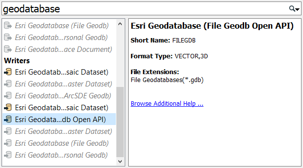
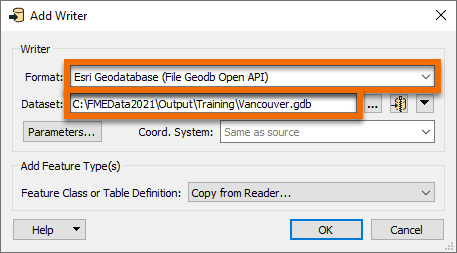
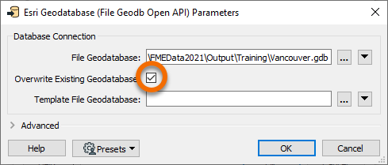
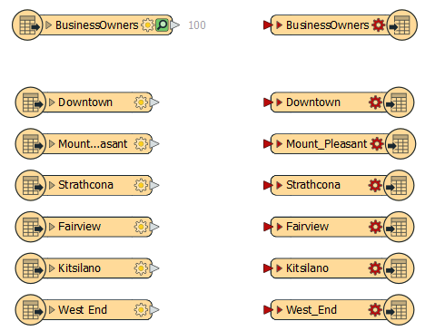

After completing this unit, you’ll be able to:
Now that Sven has read in his source Excel business license data, he has to add an Esri geodatabase writer to create his new dataset.
He opens the workspace he was working on in FME Workbench (2021.0 or later) -- it has readers for the "business owners" and "public art" datasets. He needs to add an Esri geodatabase writer. He clicks on the canvas and starts typing “geodatabase”. A large number of writer formats match “geodatabase”.

Sven selects the Esri Geodatabase (File Geodb Open API) writer and starts filling out the Add Writer dialog. Under Dataset Sven enters the location he wants his data to be saved. He enters “C:\FMEData2021\Output\Training\Vancouver.gdb”. All of the source datasets Sven will be working with are within the City of Vancouver and all of the writer feature types Sven creates with this workspace will be stored in the Vancouver.gdb file geodatabase.

Next, Sven clicks Parameters.

Clicking the Parameters button brings up the Esri Geodatabase (File Geodb Open API) Parameters dialog. Because Sven will be running this workspace often, and might be changing the schema of the output data due to changing requirements, Sven checks the Overwrite Existing Database option so that the geodatabase will be overwritten each time the workspace is run. Sven clicks OK to accept the changes made in the dialog.

The Coord. System is set as “Read from source”. This means the written data will take the coordinate system of the input data, which is LL84. This information will be stored in the geodatabase.
Sven hits OK and is then prompted to select a reader feature type to copy the writer feature type definitions from. A writer feature type will be created for each reader feature type selected here. He clicks Select All to select all the PublicArt and BusinessOwners feature types and clicks OK.

The writer feature types are then added to the canvas.

Now Sven needs to connect the reader feature types to the writer feature types. Sven connects the BusinessOwners reader feature type to the corresponding writer feature type by clicking the reader feature type output port (gray triangle), and dragging his cursor to the writer feature type input port (red triangle). A new connection line appears.

Sven ignores the PublicArt feature types for now. He wants to make sure the BusinessOwners feature type is working first. The workspace will still run with the PublicArt feature types disconnected. Sven then runs the workspace by clicking on the Run button on the toolbar.
After the workspace finishes running, Sven notices that there are red entries in the log file shown in the Translation Log, meaning that errors have been reported. Sven clicks on Errors in the Translation Log to display errors only. Here Sven sees:
FileGDB Writer: Feature class 'BusinessOwners' has shape type '<NO_GEOMETRY>' which is unknown to FME. Skipping feature class

This error occurred because the newly added BusinessOwners feature type requires a geometry type of geodb_point, but this has not been set yet. You can see it isn’t set properly because the log reports its geometry type as “NO_GEOMETRY”.
To fix this error, Sven double-clicks on the BusinessOwners writer feature type to bring up the Feature Type dialog. He sets Geometry to “geodb_point” (the addresses are represented as points), and then clicks OK.

He runs the workspace again by clicking on the "Run to this" icon on the writer feature type.

This time there are no errors reported in the Translation Log.
Make sure you have followed along with Sven’s steps.